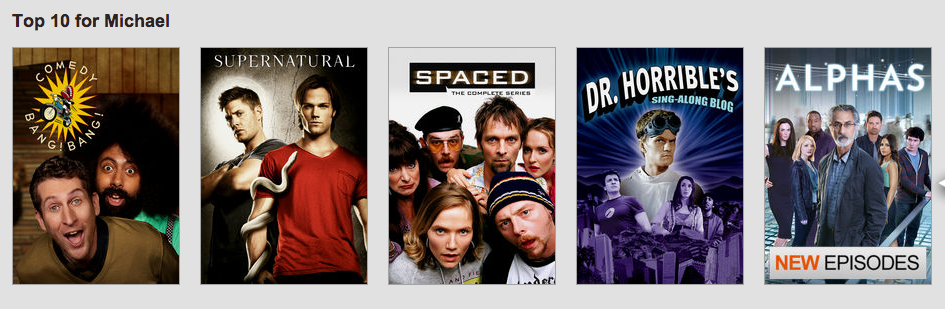
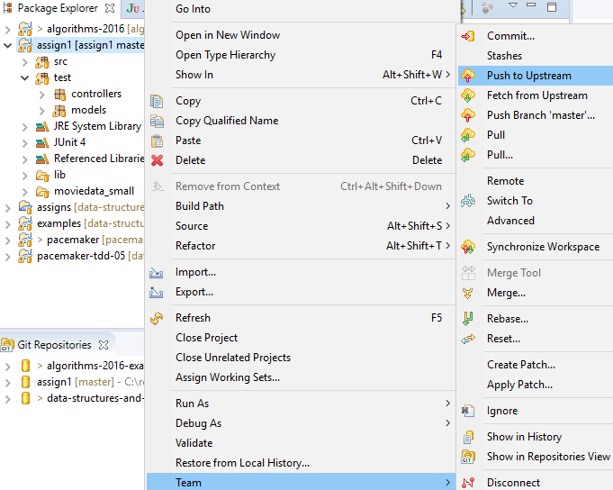
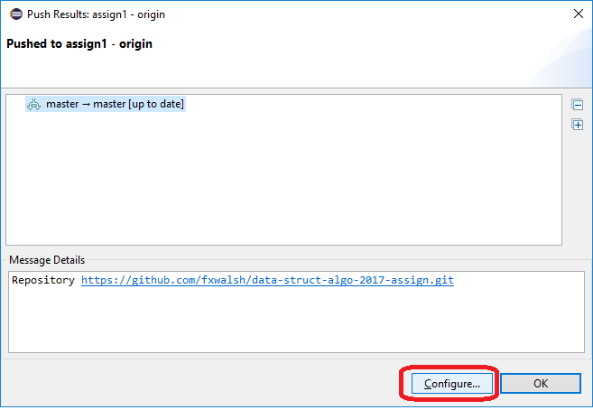
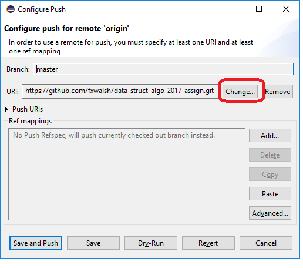
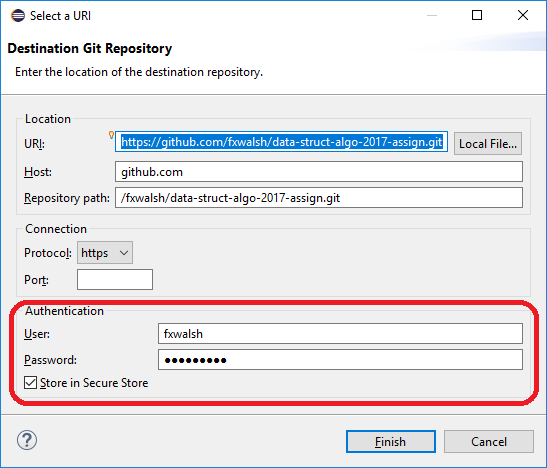
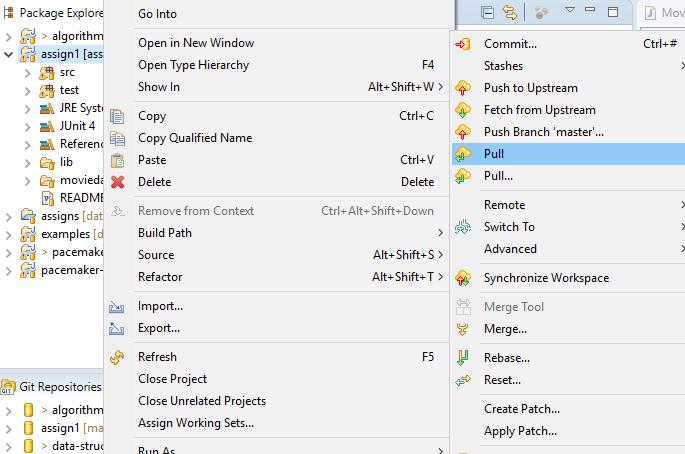

In this assignment you will extend the Movie recommender solution from the previous assignment to include the following features.
Recommender systems analyse usage patterns to suggest what a user would prefer from among a collection of things he/she has never experienced. For example, fig.1 shows Amazon’s recommendations based on a user’s activity (e.g. other movies they’ve rated etc.).  You will extend your work from assignment 1 to include the following features:
You are required to create a user interface for your project. As in the previous project it's probably best to use an existing framework to do this such as Cliche. Another option is JavaFX which provides full Graphical User Interface capabilities. Cliche will allow you to simply create an interactive command-line user interfaces.
With most recommender applications, your are required to authenicate yourself. For this, your movie recommender should be modified to only allow authenticated users use the system. Include a login option in your user interface that prompts users to authenticate themselves. Similar to the User interface, try to find an existing framework/library the accomplishes this. One option is Apache Shiro. This is a Java security framework that performs authentication, authorization, cryptography, and session management. This should allow you to quickly and easily secure your application.
The following are two possible approaches for implementing the recommendation function.
A simple approach would be to make almost the same prediction for every member. In this case the program would simply calculate the average rating for all the films in the database, sort the films by rating and then from that sorted list, suggest the top 5 films that the member hasn't already rated. With this simple approach, the only information unique to the member used by the prediction algorithm was whether or not the member had seen a film.
A better prediction about what a member might like by considering his actual ratings in the past and how these ratings compare to the ratings given by other customers. Consider how you decide on movie recommendations from friends. If a friend tells you about a number of movies that she/he enjoyed and you also enjoyed them, then when your friend recommends another movie that you have never seen, you probably are willing to go see it. On the other hand, if you and a different friend always tend to disagree about movies, you are not likely to go to see a movie this friend recommends. A program can calculate how similar two users are by treating their ratings as a vector and calculating the dot product of these two vectors (the dot product is just the sum of the products of each of the corresponding elements.) For example, suppose we had 3 films in our database and Paddy rated them [5, 3,-5], Clodagh rated them [1, 5,-3], Ronan rated them [5, -3, 5], and Michael rated them [1, 3, 0].
The similarity between Paddy and Ronan is: (5 x 5) + (3 x -3) + (-5 x 5) = 25 - 9 - 25 = -9. The similarity between Paddy and Clodagh is: (5 x 1) + (3 x 5) + (-5 x -3) = 5 + 15 + 15 = 35. The similarity between Paddy and Michael is: (5 x 1) + (3 x 3) + (-5 x 0) = 5 + 9 + 0 = 14.
We see that if both people like a film (rating it with a positive number) it increases their similarity and if both people dislike a film (both giving it a negative number) it also increases their similarity. Once you have calculated the similarity between Paddy and every other customer, you can then identify whose ratings are most similar to Paddy's. In this case Clodagh is most similar to Paddy, so we would recommend to Paddy the top films from Clodagh's list that Paddy hadn't already rated.
Your assignment should allow a user to search based on film title. The user can enter a string and the program should return a list of matching films that contain that text. All matching films should be displayed and the search should be case insensitive.
How should you order the list of matching films? You are probably familiar with Autocomplete on smart phones and search engines. Most autocomplete application predict how likely it is that the user is typing/searching for an item. For this purpose, each item has a weight and your program will use these to compute a list of the top matching terms, in decreasing order of weight.
The weights are calculated using various data, such as number of plays for movie streaming services, frequencies of search queries from other Google users, or the typing history of a smart phone user.
In this assignment, we can use the rating data for each film, perhaps order the returned movies based on average rating in decreasing order.
Search performance is critical in many systems. For example, the Google search engine runs an autocomplete application and performs this search for every keystroke typed into the search bar and for every user! Therefore application has to return a list of suggestions in a short time for it to be useful to the user. You are not required to provide this level of functionality but the performance/efficiency of your search algorithm will be considered in the marking scheme.
Your submission should include a report on the efficiency of your search.
Your assignment should allow a user to search based on film title. The user can enter a string and the program should return a list of matching films that contain that text. All matching films should be displayed and the search should be case insensitive.
How should you order the list of matching films? You are probably familiar with Autocomplete on smart phones and search engines. Most autocomplete application predict how likely it is that the user is typing/searching for an item. For this purpose, each item has a weight and your program will use these to compute a list of the top matching terms, in decreasing order of weight.
The weights are calculated using various data, such as number of plays for movie streaming services, frequencies of search queries from other Google users, or the typing history of a smart phone user.
In this assignment, we can use the rating data for each film, perhaps order the returned movies based on average rating in decreasing order.
Search performance is critical in many systems. For example, the Google search engine runs an autocomplete application and performs this search for every keystroke typed into the search bar and for every user! Therefore application has to return a list of suggestions in a short time for it to be useful to the user. You are not required to provide this level of functionality but the performance/efficiency of your search algorithm will be considered in the marking scheme.
Your submission should include a report on the efficiency of your search.
As before, please submit assignment as a Github or Bitbucket repository. The following are expected to be included:
All code should be internally documented and your repository should contain by a readme file that clearly and concisely explains the features of your program. Code that does not compile will not be graded. Before you push your assignment to Github, make sure there are no compile errors.
You should be commiting your changes regularly on Github. Your commit historiy is an indication of your incremental progression as you work through the assignment. Also, you should push to your remote repository well before the submission deadline. Here are some steps that might help if you are having problems with pushing your project to Github. This assumes you are using the same repository you used in assignment 1. Follow the same procedure as in your previous assignment. If you are experiencing problems, check the following.
Open the Package Explorer and select your assignment. Select Team->Commit.. 
Select Configure... in the push results dialog 
In the Configue Push dialog, click on Change... 
In the Select a URI dialog, check the details are correct and re-enter your authentication details. Also, make sure the Store in Secure Store is ticked. 
Click on Finish to return to the Configure Push dialog. Click on Save and Push to push your committed changes to the remote repo.
If, when you try to push to remote, you get a message stating "master->master [rejected non-fast-forward]" you probably made changes directly on the remote repository. You can fix this by fetching and merging the changes made on the remote branch with the changes that you have made locally. Do a git pull to try to resolve this.
Open the Package Explorer and select your assignment. Select Team->Commit.. 
Now try a git push as before...
All code should be internally documented and your repository should contain by a readme file that clearly and concisely explains the features of your program. General marking scheme, including above expectations, is as follows:
TBA